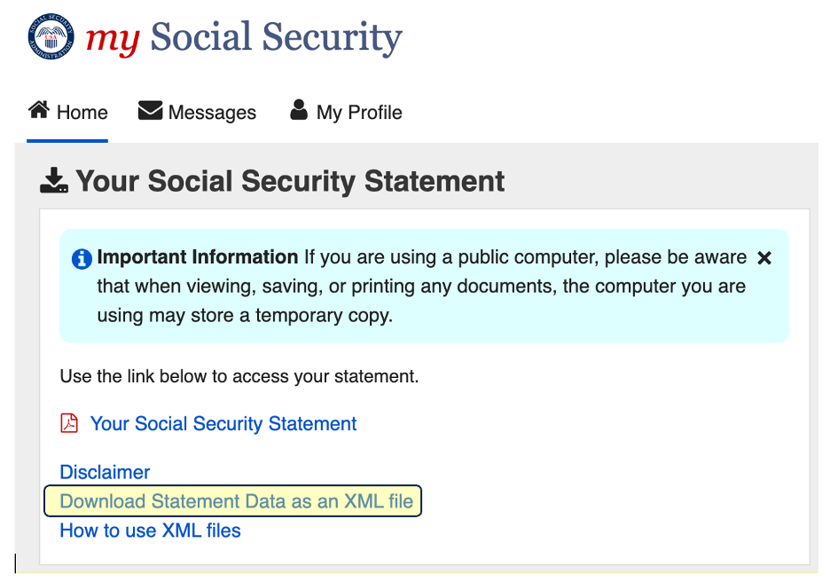

Welcome to tbd.com, your one-stop destination for personalized and comprehensive insights into your Social Security earnings, taxes paid, and estimated benefits. Our user-friendly platform empowers you to effortlessly retrieve and analyze crucial information directly from the official Social Security Administration (SSA) website, ssa.gov.
We harness the power of your Social Security data to generate a tailor-made report, ensuring you have a clear understanding of your financial standing and future benefits. Discover the peace of mind that comes from being informed about your Social Security contributions and projections, and make well-informed decisions for your financial future. Unlock the full potential of your Social Security information with tbd.com - the ultimate tool for maximizing your benefits.
See the Instructions section below for information on how to use this tool.
Go to ssa.gov and sign into your Social Security account (create a new account if you haven't created one already).
Click on the "Your Social Security Statement" link.
Click on the "Download Statement Data as XML" link and save it somewhere on your device (remember where you saved it).

Log out of the ssa.gov site (if you wish).
Above, click on the "Choose File" button and browse to the XML file you downloaded.
The information provided on this website is for general informational purposes only and should not be considered as professional or personalized financial advice. The content presented here does not take into account your individual financial situation or objectives. Making financial decisions involves inherent risks, and you should consult with a qualified financial advisor or professional before making any financial decisions. While we strive to provide accurate and up-to-date information, we make no representations or warranties of any kind, express or implied, regarding the completeness, accuracy, reliability, suitability, or availability of the information provided on this website. We shall not be held responsible for any losses or damages arising from the use of or reliance on the information presented here. By accessing and using this website, you acknowledge and agree to these terms and conditions.
We do not store any user data on our servers. When you browse our website, no personally identifiable information is collected, tracked, or retained by us. We adhere to stringent data protection practices and do not engage in any data storage activities that could compromise your privacy.
Social Security is based on the highest 35 years of average wage index adjusted earnings. You have years of recorded income.
Because you have years recorded, currently years are recored as having $0 earnings.
Your earnings met or exceeded the taxable maximum times.
Your highest earning year was when you earned .
Inflation adjusted, your highest earning year was when you earned .
Your lowest earning year of the top 35 was where you earned (Average Wage Index adjusted). You must earn more than this in this year or a future year to increase your Social Security Average Indexed Monthly Earnings.
In total, you earned ( inflation adjusted).
You are eligible to collect Social Security at age 62 on .
You have been eligible to collect Social Security since age 62 on .
The maximum possible Social Security payments is at age 70 on .
If you have no earnings this year or in future years, and claimed Social Security at age , your approximate yearly benefits will be approximately .
If you continue working until age 70, earning the same every year as you did the last year you had recorded FICA earnings (), and claimed Social Security at age 70, your approximate yearly benefits would be .
As of your last birthday, your life expectancy is
| Fica Tax Paid | Medicare Tax Paid | Total | |
|---|---|---|---|
| By Employee | |||
| By Employer(s) | |||
| Total |
Note, the top 35 earning years have a green background and a red star ★ next to the AWA adjusted Fica Earnings amount.
Medicare earnings are different from FICA earnings if you earned more than the taxable maximum for that year (FICA earnings stop at the taxable maximum).
The Average Indexed Monthly Earnings (AIME) is the average of all months in your 35 highest Average Wage Index adjusted earnings. Your current AIME is: or yearly.
The Primary Insurance Amount (PIA) for those reaching full retirement age in 2023 is:
For a PIA total of per month ( yearly). If you stopped contributing to Social Security last year, your approximate monthly check if claimed at your full retirement age (67) would be this amount.
Note, the following table assumes your full retirement age is 67. Since you were born before 1960 you will need to adjust the start date/age accordingly.
The table below shows the expected benefit amount based on estimated future earnings and the age you start claiming Social Security.
Click on a row to see the cumulative benefits by age for the given "Last Worked" year.